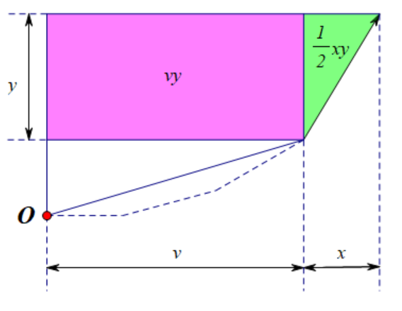

Project Euler 742
Project Euler 742
题目
Minimum area of a convex grid polygon
A symmetrical convex grid polygon is a polygon such that:
All its vertices have integer coordinates.
All its internal angles are strictly smaller than \(180°\).
It has both horizontal and vertical symmetry.
For example, the left polygon is a convex grid polygon which has neither horizontal nor vertical symmetry, while the right one is a valid symmetrical convex grid polygon with six vertices:
Define \(A(N)\), the minimum area of a symmetrical convex grid polygon with \(N\) vertices.
You are given \(A(4) = 1, A(8) = 7, A(40) = 1039\) and \(A(100) = 17473\).
Find \(A(1000)\).
解决方案
可见，由于多边形同时具有水平、竖直对称，整条边界可以由第一象限的一段单调凸链通过镜像得到。
把这条链看成从上方（靠近 \(y\) 轴）走到右方（靠近 \(x\) 轴）的一段折线。由于整体严格凸，这段链的边斜率必须严格单调（取固定顺序，例如按斜率从小到大）。这意味着我们真正要决定的，不是每个顶点坐标，而是这条链的边方向（斜率）集合，并按斜率顺序排列。
设第一象限链上某条非轴向边的步长（取绝对值）为 \((a,b)\)，其中 \(a>0,b>0\)。
如果 \(g = \gcd(a,b) > 1\)，则这条边方向与 \(\left(\dfrac{a}{g}, \dfrac{b}{g}\right)\) 相同，斜率不变。把它缩短为 \(\left(\dfrac{a}{g},\dfrac{b}{g}\right)\)：不会破坏斜率顺序，也不会破坏凸性，还不会改变该斜率出现过的事实（对应的斜率类计数/后文代价不变）；并且会使面积减小。因此在最优解中，所有非轴向方向都可以取为（互素方向）。
因此这一步把候选集离散化成了互素格点方向。
为了统一处理水平/竖直边和普通斜边，引入一套编码。假设候选方向记为 \((x,y)\)：那么水平与竖直两种特殊方向 \((1,0),(0,1)\)，此外，每个非轴向本原方向 \((i,j)\)（\(i,j>0, \gcd(i,j)=1\)）编码为 \((2i,2j)\)。这样做的作用有两个：面积转移公式会变得整洁；顶点数约束可统一成一个代价。
记顶点数为 \(N\)，设 \(M = \dfrac{N}{2}\)。这里更准确地说，我们先按边数来计数：对凸多边形有边数 = 顶点数，因此按边数计数等价于按顶点数计数。在这个编码下：
- 一个非轴向斜率（\((2i,2j)\)）在水平轴与竖直轴的作用下会产生 \(4\) 条边（分别位于四个象限），因此对总边数（也即总顶点数）贡献为 \(4\)，从而对 \(M\) 的贡献是 \(2\)；
- 水平或竖直方向（\((1,0)\) / \((0,1)\)）各自只会产生 \(2\) 条边（例如水平斜率对应顶部与底部两条边；竖直斜率对应左侧与右侧两条边），因此对总边数（也即总顶点数）贡献为 \(2\)，从而对 \(M\) 的贡献是 \(1\)。
于是每个候选项都有一个统一的代价 \(dc\)：轴向项 \(dc = 1\)，非轴向项 \(dc = 2\)
实现时可用统一写法：\(dc = 2 - ((x \oplus y)\&1).\)因为：\((1,0),(0,1)\) 奇偶不同，得到 \(dc=1\)，\((2i,2j)\) 都为偶数，得到 \(dc=2.\)于是问题变成：从候选向量中选一些，每个最多一次，总代价恰好为 \(M\)，并使面积最小。
设按斜率从小到大选出的向量为\((x_1,y_1),(x_2,y_2),\dots,(x_t,y_t)\)定义前缀和\(\displaystyle X_k=\sum_{m=1}^k x_m, X_0=0.\)由于斜率严格有序，得到的第一象限折线严格凸；再关于水平轴、竖直轴镜像即可得到目标对称凸多边形。
假设当前已加入若干向量，此时累计的 \(x\) 前缀和为 \(v\)。现在加入一个新向量 \((x,y)\)。这一步带来的面积增量恰好为\(\Delta A = vy+\dfrac{xy}{2}.\)几何上可理解为：一个宽 \(v\)、高 \(y\) 的矩形：\(vy\)，再加一个底 \(x\)、高 \(y\) 的直角三角形：\(\dfrac{xy}{2}.\)

因此总面积可以写成所有步骤增量之和：\(\displaystyle A=\sum_{k=1}^{t}\left(X_{k-1}y_k+\frac{x_k y_k}{2}\right)\)
按斜率排序后，候选项只能按顺序决定取或不取，天然是 \(0/1\) 背包式动态规划。令\(f(c,v)\)表示已使用总代价为 \(c\)，当前 \(x\) 前缀和为 \(v\)时能够达到的最小面积。
若状态不可达，则定义为 \(+\infty\)。初始条件：\(f(0,0)=0,\)其余状态初始化为\(f(c,v)=+\infty,((c,v)\neq(0,0)).\)
枚举某个候选向量 \((x,y)\)，其代价为 \(dc\)。若当前状态为 \((c,v)\)，选择它后会到达 \((c+dc,v+x)\)，面积增加\(vy+\dfrac{xy}{2}.\)
因此转移为：\(f_{\text{new}}(c+dc,v+x)\leftarrow f_{\text{old}}(c,v)+vy+\dfrac{xy}{2}.\)这里 \(f_{\text{old}} / f_{\text{new}}\) 表示处理当前候选前后的状态函数。
在实际实现里，通过对 \(c\) 逆序枚举，即可原地完成 \(0/1\) 转移，于是也可写成等价形式：\(f(c+dc,v+x)\leftarrow f(c,v)+vy+\dfrac{xy}{2}.\)
令 \(M=\dfrac{N}{2}\)，则答案为\(A\displaystyle (N)=\min_v f(M,v).\)
不过，理论上本原方向有无限多个，但最优解只会用到较短的方向。实践中枚举范围取\(i^2 \le 3M, j^2 \le 3M,\)再筛互素对。在这个范围内，配合上述状态转移，能够精确复现校验值并得到最终答案。
代码
1 |
|